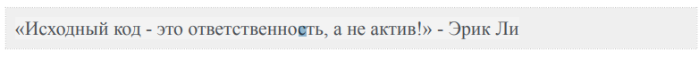
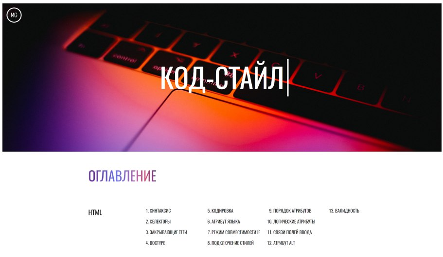

и другие) не ставится.
Зачем нужен кодстайл в веб-вёрстке
Представьте, что к вам подошел иностранец и задал вопрос. Скажем, про тонкий зеленый длинный маленький предмет. Первая мысль котрая приходит в голову: все слова знакомы, но с описанием приедмета что то не так. Инстуитивно хочется расставить эти прилагательные по-другому (например, маленький зеленый тонкий длинный). Это называется порядком однородных определений.
Как и прилагательные в речи, CSS-свойства в коде могут выглядеть не на своем месте, если их не выстроить в нужном порядке. Порядок свойств позволит программистам, работающим над одним проектом, понимать чужой код и правильно оформлять свой. Осталось договориться о том, как располагать свойства, чтобы не казаться друг другу иностранцами.
Для такой цели был придуман кодстайл (набор правил и соглашений, используемых при написании исходного кода на некотором языке программирования).
У многих крупных компаний, таких как Yandex , Google , рекомендации по оформлению кода опубликованы и доступны всем желающим. В фирмах поменьше могут быть внутренние инструкции, иногда единый стиль кода оговаривается устно(бывает и такое).
Наш курс по веб-вёрстке - не исключение, в нем так же есть правила оформления. Он делится на три части, о которых ниже.
| 1.СИНТАКСИС | 5.КОДИРОВКА | 9.ПОРЯДОК АТРИБУТОВ | 13.ВАЛИДНОСТЬ |
| 2.СЕЛЕКТОРЫ | 6.АТРИБУТ ЯЗЫКА | 10.ЛОГИЧЕСКИЕ АТРИБУТЫ | |
| 3.ЗАКРЫВАЮЩИЕСЯ ТЕГИ | 7.РЕЖИМ СОВМЕСТИМОСТИ | 11.СВЯЗИ ПОЛЕЙ ВВОДА | |
| 4.DOCTYPE | 8.ПОДКЛЮЧЕНИЕ СТИЛЕЙ | АТРИБУТ ALT |
Первая из частей - HTML. Это начальная стадия соблюдения кодстайла, ведь любой сайт вы начинаете писать именно с этого языка. Давайте посмотрим на основные правила:
Это лишь выжимка основного из всех правил, обязательно ознакомьтесь со всеми правилами и применяйте их.
В CSS правил больше, потому что синтаксис там посложнее. Одно из важных, которое действительно поможет вам сохранить ваш код в и,деальном виде - порядок свойств. Давайте посмотрим, как это выглядит
| Порядок | Группа свойств | Используемые свойства |
|---|---|---|
| 1 | Позиционирование |
position: relative; left: 0; right: 0; top: 0; bottom: 0; |
| 2 | Блочная модель |
display: flex; aligin-items:center; margin: 10px; padding: 10px 20px; border: 1px solid red; width: 200px; height: 100px; box-sizing: border-box; |
| 3 | Типографира |
font-family: Arail; font-size: 25px; font-style: italic; text-decoration: none; color: red; |
| 4 | Оформление |
background: red; opacity: 1; |
| 5 | Анимация |
transform: translateX(5px); animation: shake 0.3s infinite; |
Правила JS не сильно отличаются от HTML и CSS, разве что само применение зависит от итогового синтаксиса. Например, есть такие правила, присущие только для JS, как:
Ну а полный кодстайл вы можете (и очень рекомендуется) изучить по ссылке.